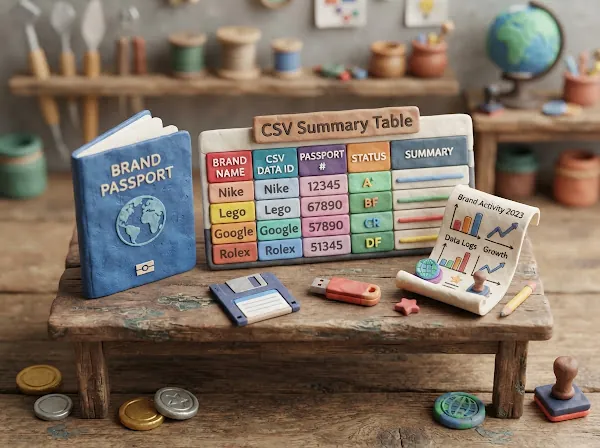
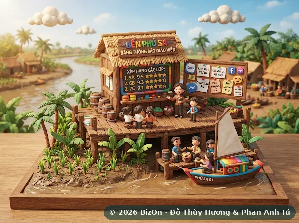
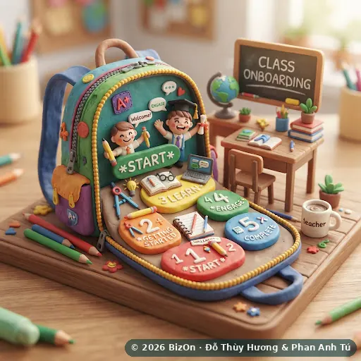
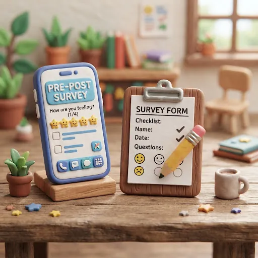
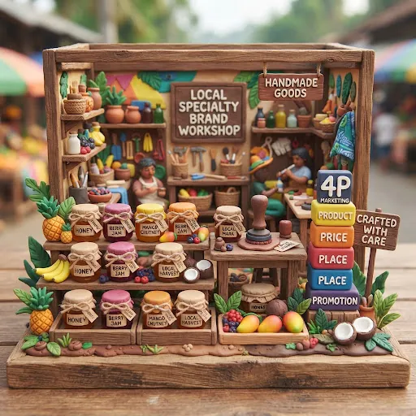
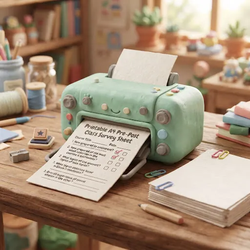
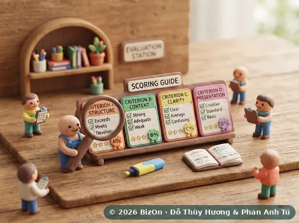
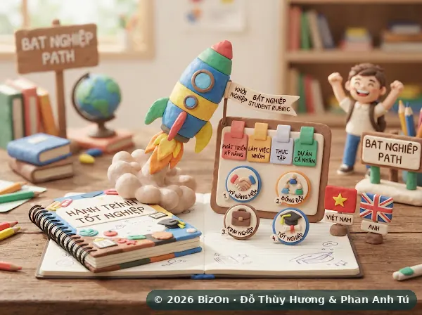
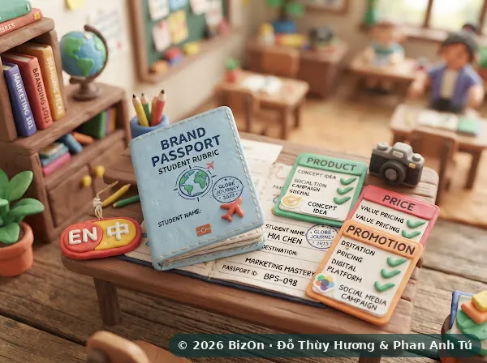

Mọi công cụ dạy học, ở một chỗ
Mở lớp, khóa vòng, tính giờ thi, theo dõi dấu vết quyết định và chấm điểm – mọi ứng dụng và tài liệu BizOn dành cho giảng viên gom về đây.
Trang Giảng viên – Bảng điều khiển lớp
Đăng nhập bằng tài khoản giảng viên, tạo mã lớp và điều khiển buổi học trực tiếp: mọi thao tác của sinh viên trong Bật Nghiệp và Hộ Chiếu Thương Hiệu 3D hiện về đây.
- 🔑 Tạo mã lớp
- 🔒 Khóa vòng cho cả lớp
- ⏱️ Tính giờ thi
- 📒 Sổ điểm & rubric
- 📊 Xuất Excel
- 🎓 Chứng nhận chính thức
Theo dõi & chấm điểm
Công cụ xem lại từng đội sau buổi học và chấm trên bằng chứng tái lập được. Không dùng AI để chấm phần phản tư của sinh viên.
Instructor Studio
Xem theo mã lớp: bảng xếp hạng Bật Nghiệp, dòng thời gian khóa vòng, kết quả Hộ Chiếu, Decision Trace & phản tư, khảo sát trước–sau.
Mở →
Sổ điểm (ảnh chụp đóng băng)
Nạp nhật ký quyết định, chấm trên ảnh chụp đóng băng để tái lập được, lọc theo lớp/vòng, xuất CSV và bản in.
Mở →
Bảng tổng kết Hộ Chiếu (CSV)
Kéo-thả các file CSV sinh viên xuất từ Hộ Chiếu Thương Hiệu 3D để xem cả lớp – không cần mạng.
Mở →
Bảng giáo viên Bến Phù Sa
Dán kết quả sinh viên gửi qua Zalo, Messenger hoặc email (chủ yếu bài chơi nhóm); bảng tự đọc và xếp hạng.
Mở →Chuẩn bị lớp
Đọc một lần trước buổi đầu tiên: các bước mở lớp, kịch bản lớp học và phiếu khảo sát trước–sau.

Mở lớp trong 5 bước
Bộ công cụ tải sẵn, năm bước rõ ràng và cách chấm minh bạch – không cần phòng máy.
Xem →Kịch bản lớp học
Kịch bản buổi học cho lớp 40–60 sinh viên, kèm bốn lab thực hành có màn hình chiếu cho giảng viên.
Xem →
Khảo sát trước–sau (online)
Sinh viên làm trên điện thoại với mã ẩn danh tự đặt; kết quả nộp về hệ thống nghiên cứu.
Mở →
Xưởng Nhãn Hiệu Đặc Sản
Phiếu làm bài chương 5 (nhãn hiệu + 4P) có gợi ý khi gõ, xuất Thẻ thương hiệu một trang để nộp, kèm bảng chấm thang 10.
Mở →Tình huống: CHAM Homestay
Tình huống doanh nghiệp dịch vụ trên cù lao Tân Lộc (Cần Thơ): homestay sinh thái, giả định lập kế hoạch và sáu câu hỏi thảo luận.
Xem →
Dự án CHAM: toàn bộ học liệu
Câu chuyện một ngày, trò chơi nhà sáng lập kèm bảng điều khiển giảng viên, thẩm định kế hoạch, bộ công cụ và bài giảng, Đấu trường Tân Lộc và mẫu website cho khách, song ngữ Việt – Anh.
Mở →
Khảo sát trước–sau (bản in A4)
Cùng bộ câu hỏi, dạng phiếu in khổ A4 cho lớp không dùng điện thoại.
Mở →Thang điểm & rubric
Tài liệu cho giảng viên và bản thang điểm phát cho sinh viên trước buổi học.
Thang điểm đánh giá (thang 10)
Nguyên tắc chung và thang 10 cho Hộ Chiếu Thương Hiệu 3D (cá nhân) và Bật Nghiệp (theo đội).
Xem →
Hướng dẫn chấm chi tiết
Quy trình chấm và hướng dẫn từng tiêu chí cho cả hai game.
Xem →
Thang điểm sinh viên – Bật Nghiệp
Bản phát cho sinh viên (có bản tiếng Anh qua nút đổi ngôn ngữ).
Xem →
Thang điểm sinh viên – Hộ Chiếu
Bản phát cho sinh viên (có bản tiếng Anh qua nút đổi ngôn ngữ).
Xem →Thang điểm sinh viên – Hộ Chiếu Mini
Cho bản Đầu tư quốc tế và bản Indonesia 60 phút; điểm do game tính.
Xem →Cần tài khoản giảng viên hoặc buổi dạy thử?
Viết cho nhóm BizOn – chúng tôi trả lời mọi giảng viên.